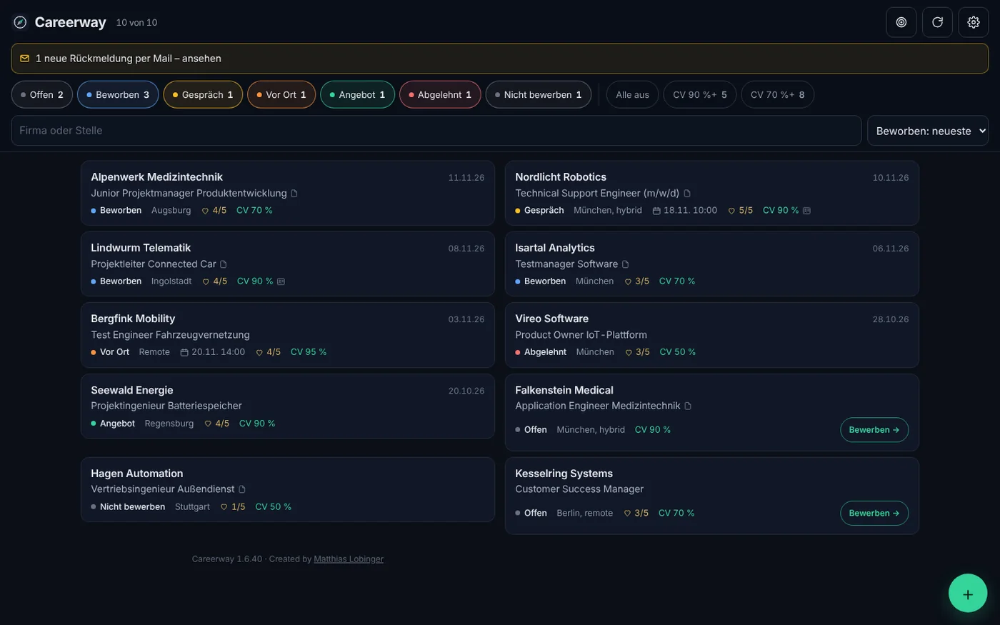
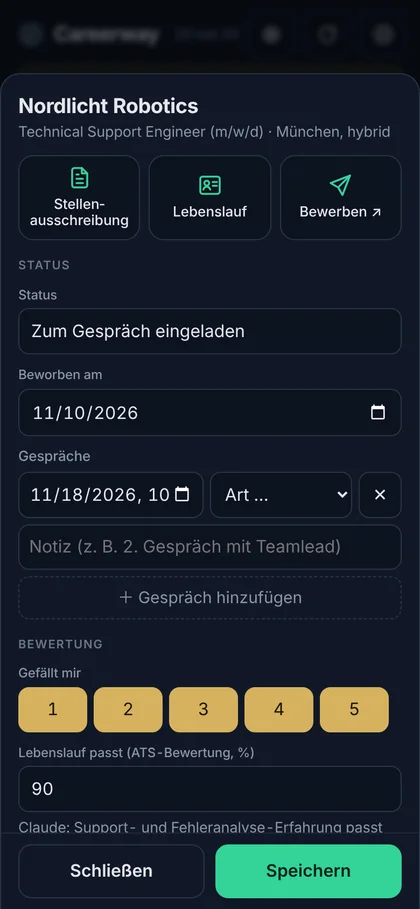
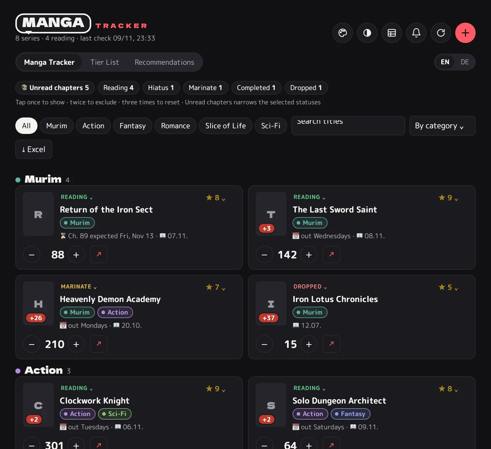
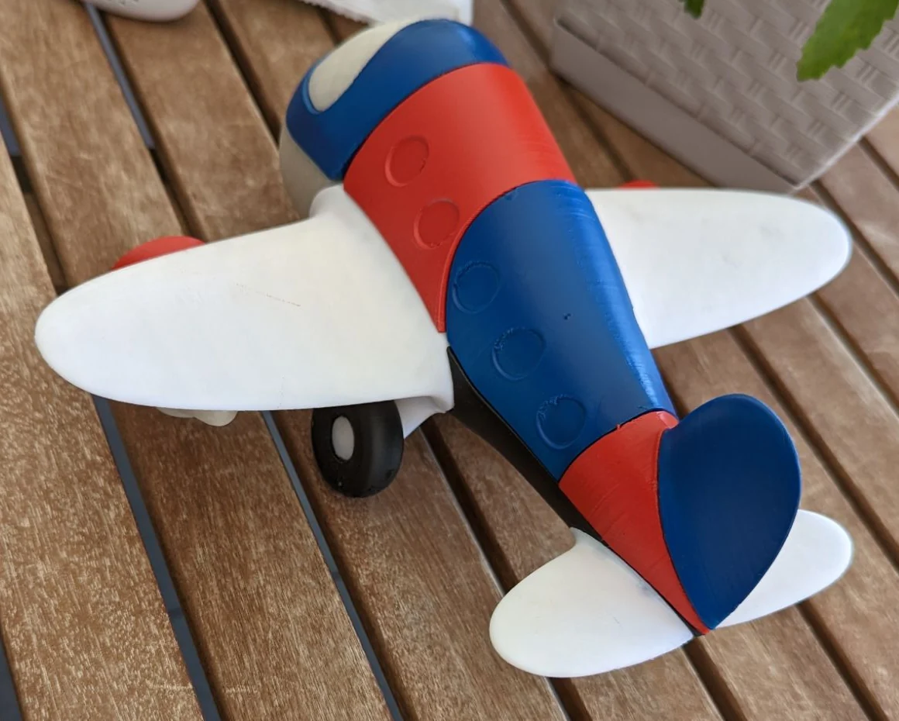

Matthias
Lobinger
Engineer in the automotive industry: vehicle connectivity, 3rd-level support and technical project leadership. I also build my own apps and print things in 3D.
- Currently
- Technical Support Engineer (3rd level), Allgeier Engineering
- Location
- München, Germany
- Languages
- German (native) · English (fluent) · Spanish (basic)
- Flexibility
- Travel up to 50 % · on-call possible
Automotive Engineer
Vehicle connectivity and telematics, from requirement to release.
Project Management
Led development and integration of 8 vehicle functions.
Product Management
Product development (NPI), market and competitor analysis.
3rd-Level Support
Escalations, root cause and supplier follow-up.


Careerway
A job application tracker that runs on your own Google Sheet: every application and interview in one place, an AI-assisted CV-fit score, and an overview of the skills you are missing.

Manga Tracker
Track manga, manhwa and manhua: reading progress, ratings, new chapters and release days, with all data in your own Google Sheet.
Fantasy Alert
A live overlay on your TV stream. While you watch the game it shows what happens with your fantasy football players, and whether you are leading or trailing.

3D Printing
From CAD model to finished part: functional prints, my own designs and a toy airplane puzzle with magnets that glows in the dark.
Hörbücherei
A standalone audiobook player on a Raspberry Pi, made for older people and people with disabilities. It works completely offline, needs no tech experience (a few touches or one big button), remembers where you stopped in every book and has a sleep timer. Next come tests on the real hardware and voice control, so it can later be used completely hands-free.
Engineer (B.Sc. Medical Engineering) in the automotive industry. Experience in vehicle connectivity and telematics, 3rd-level support, technical project leadership, requirements and test management, and supplier quality follow-up. Builds own web apps and uses AI tools in daily work.